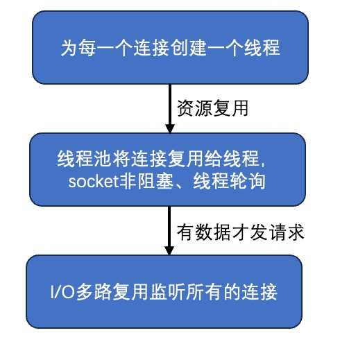
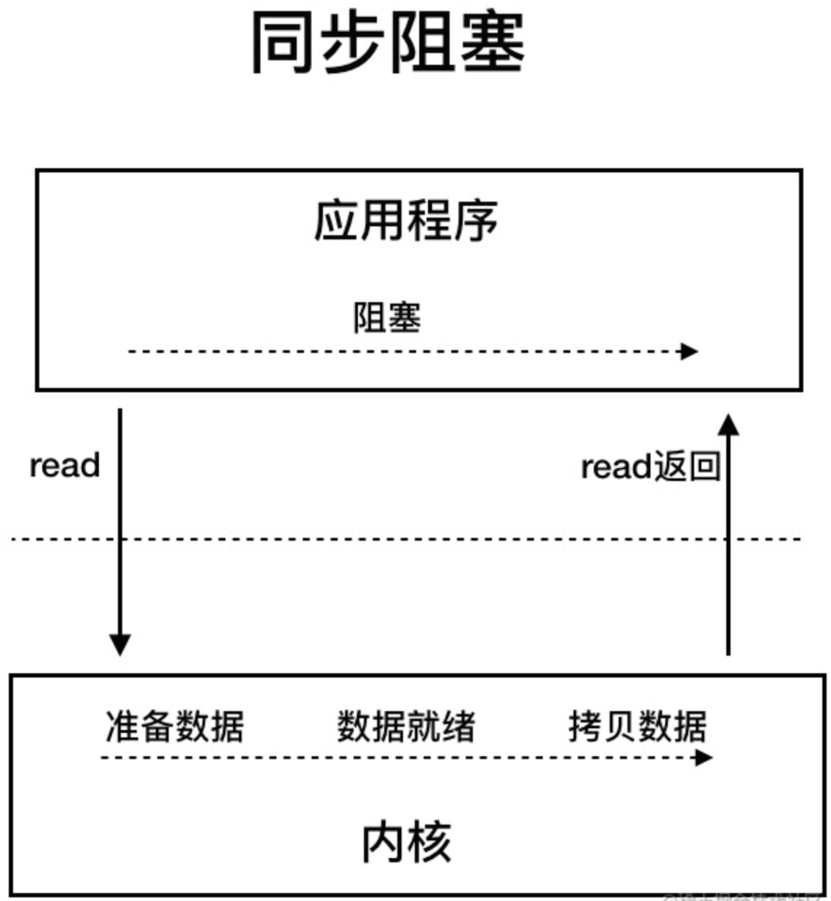
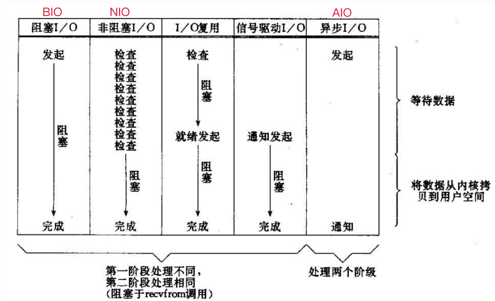
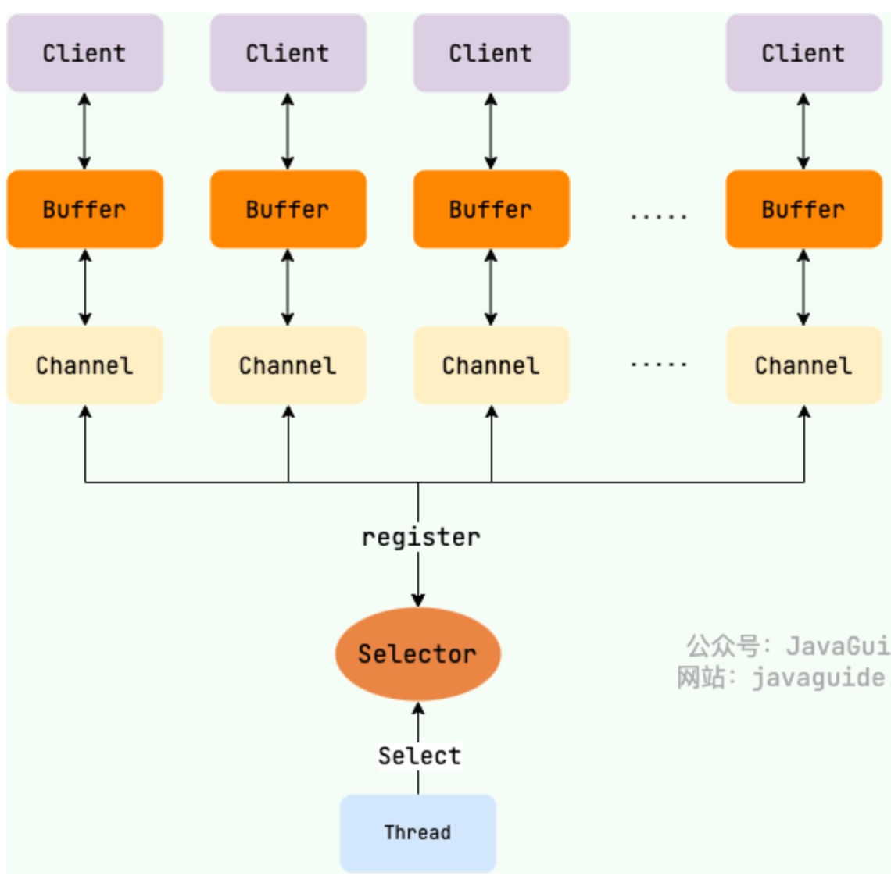
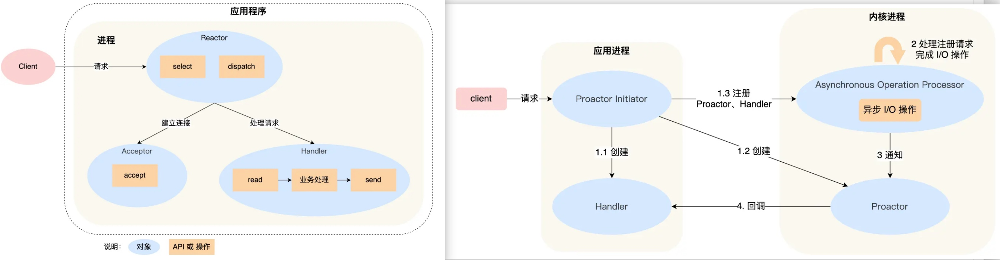

Java NIO
NIO（Non-blocking I/O 或者 New I/O），是一种同步非阻塞的 I/O 模型，也是 I/O 多路复用的基础，逐渐成为解决高并发与大量连接问题的有效方式。

传统的 BIO 模型
传统服务器同步阻塞 I/O 处理（Blocking I/O）的经典模型是：

BIO 同步阻塞模型通常使用多线程，这是因为socket.accept(), socket.read(),socket.write()三个主要 I/O 方法都是同步阻塞的，如果是单线程的话就只能挂死在那；开启多线程可以充分利用 CPU 去处理其他的事情。
多线程的本质：①利用多核特性；②当 I/O 阻塞系统，但 CPU 空闲的时候可以利用多线程使用 CPU 资源。
现在的多线程编程通常都基于线程池，可以降低线程频繁创建和销毁的成本开销，在活动连接数不是很多（单机小于1000）情况下是合理的，可以让每个连接专注自己的 I/O。
BIO 模型最本质的问题在于「严重依赖线程资源」，像 Java 的线程栈至少要分配将近 1M 的空间，如果系统的线程数过千整个 JVM 的内存都要被吃掉一半。所以当面临更高的并发连接数时，需要一种更高效的 I/O 处理模型。

以socket.read()为例：
- 传统的 BIO 中如果 TCP RecvBuffer 没有数据就会一直阻塞，直到收到数据并返回读到的数据；
- 对于 NIO，如果 TCP RecvBuffer 有数据，就会把数据从网卡读到内存返回给用户，如果没有数据则直接返回 0 永远不会阻塞；
- 最新的 AIO 里，不但等待就绪是非阻塞的，就连数据从网卡到内存也是异步的。
总结来说，NIO 中 socket 的读、写、注册和接收函数，在等待就绪阶段都是非阻塞的，但是真正的 I/O 操作是同步阻塞的（消耗 CPU 但性能很高）。
BIO 需要多线程的原因是在进行 I/O 的时候没有办法知道能否读写，只能通过阻塞的方式“傻等”，所以只能通过开辟多线程，没有更好的办法利用 CPU。
而 NIO 的读写函数可以立刻返回，这就给了我们不开额外线程利用 CPU 的机会，如果一个连接不能读写（socket.read()或socket.write()返回 0），我们可以把这件事记录下来，记录的方式是在 Selector 上注册，然后切换到其他就绪的连接继续进行读写。
结合事件模型使用 NIO
利用「事件模型」单线程处理所有的 I/O 请求，NIO 的主要事件包括：读就绪、写就绪、新连接请求。

我们首先要注册这几个事件到对应的 handler 处理器。然后在合适的时机告诉事件选择器 selector 对这个事件感兴趣，本质上就是事件驱动模型——对于写操作，在发送缓冲区满写不出去时才需要监听；对于读操作，在系统没办法承载新读入的数据时才需要监听；对于连接操作，一般是异步 connect 或 connect 失败需要重连的时候需要监听。
其次用一个死循环选择就绪的事件，会执行系统调用（Linux2.6 之前是 select、poll，Linux2.6 之后是 epoll）等待新事件的到来。这些函数都是阻塞的，它们会等待事件的发生，不会导致 CPU 占用，事件到来时系统会标记已准备就绪的文件描述符（FD），然后通知应用程序。
NIO 由原来的通过创建多线程的方式阻塞读写变成了单线程轮询事件，找到可以进行读写的网络描述符进行读写。除了事件的轮询是阻塞的，剩余的 I/O 操作都是纯 CPU 操作，没有必要开启多线程。
单线程处理 I/O 的效率很高，没有线程切换，只需要处理读、写、选择事件，但现在的服务器一般都是多核的，如果能利用多核心进行 I/O，对效率会有更大的提升。
为了更加合理的利用多核 CPU 资源，我们需要的线程角色包括几种：(1)事件分发器，单线程选择就绪的事件；(2)I/O 处理器，包括 connect、read、write 等；(3)业务线程，在处理完 I/O 后，业务还有自己的业务逻辑，有的还会有自己的阻塞 I/O 如 DB 操作、RPC等。
客户端 NIO
上面的分析是 NIO 在服务端对于解放线程，优化 I/O 和处理高并发连接上的优势。
在客户端中，常见的客户端 BIO + 线程池模型，可以创建 n 个连接，当某个连接被占用时可以使用其他连接来提高性能。但是多线程模型面临和服务端相同的问题——如果希望增加连接数来提高性能，则连接数又受制于线程数无法建立很多线程。
Redis批处理
对于 Redis 单线程模型来说，能够保证同一连接的所有请求与返回顺序一致。可以通过单线程+队列缓冲区，然后 pipeline 发送返回 future，然后在可读时直接在队列中将 future 取出来就可以了。
通过 Redis pipeline 批处理来提升 I/O 能力，同时获取异步处理能力。
短连接的HttpClient抓取
一般的 httpClient 在抓取多个网站时，通常采用多线程 + 阻塞 I/O，每个 http 请求都需单独的线程负责具体的 connect、send、recv 操作，而且问题在于三个点：①线程数受限（可能单机最大支持 1000 线程） ②大量短连接，需要频繁创建、销毁 TCP 连接，开销大 ③阻塞 I/O 这种网络模式。
所以可以通过客户端 NIO 的方式，一个线程管理大量的 TCP 连接，当一些连接、读写事件不能立刻完成时不会进行阻塞，而是注册事件等待通知，并由具体的系统调用函数(select、poll、epoll)监听连接的状态。
Reactor和Proactor
I/O 多路复用的核心是事件分发器（event dispatcher）。在开始时需要将感兴趣的事件（读、写、连接事件）注册到事件分发器中，并提供相应的 handler 处理者，事件分发器会在合适的时候将请求的事件分发给这些 handler。
其中涉及到的两种模式分别是 Reactor 和 Proactor，Reactor 模式是基于 NIO 的，而 Proactor 模式是基于 AIO 的。

- Reactor 是非阻塞同步网络模式(NIO)，感知的是就绪可读写事件。每次感知到有事件发生（比如可读、可写）后，就需要应用进程主要来调用 read 或 write 方法来完成数据的读取，也就是说应用进程要主动将 socket buffer 中的内核态数据读取到用户态的应用进程内存中，这个过程仍然是同步的，读取完数据之后应用进程才能处理数据。
- Proactor 是异步网络模式(AIO)，感知的是已完成的读写事件。在发起异步读写请求时，需要传入数据缓冲区的地址（用来存放异步的结果数据），这样系统内核才可以自动将我们需要数据的读写工作完成，这里的读写工作全程交给操作系统来做，不需要像 Reactor 那样还需要应用进程主动发起 read/write 来读写数据，操作系统完成读写后，就会通知应用进程来处理数据。